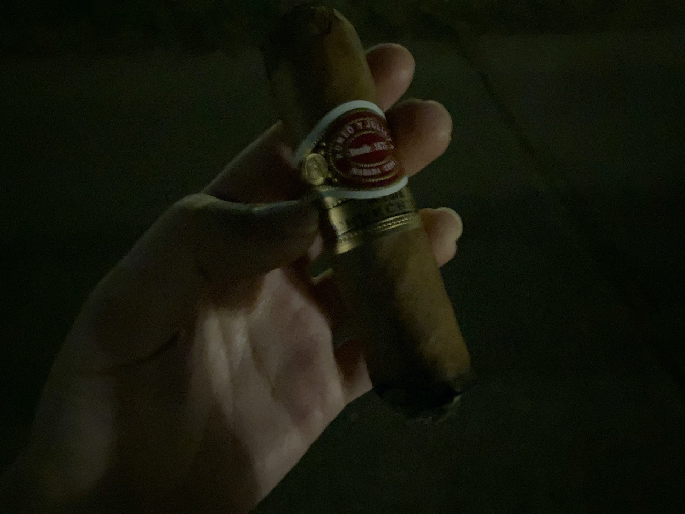

Cigar Review: Romeo Y Julieta - Wide Churchill
I was skeptical about this cigar because I did not have a good time with Romeo Y Julieta No. 2, but Wide Churchill turned to be surprisingly good! 😮 I enjoyed it pretty much till the end!
It is a packed and thick cigar. The construction was good and it was very beautiful. It is a very premium cigar. I was originally going to pick Short Churchill, but the price difference was only CAD$2, so I ended with this one. 😋
Unfortunately, I couldn't quite capture its beauty on time because I accidentally dropped the cigar off the table pretty much immediately after I took off the name band while photo-shooting. The wrapper cracked like an egg. 😭😭😭
Despite the fact that I damaged the cigar, it is still very stunning and grand! It just looks amazing, but would have been more glamorous if I was more careful and didn't let it roll off. 😢

Anyways, the first third was just very creamy. It had a bit of sweet coffee notes which I like it a lot. It was just a lovely start! ❤ The burn is slightly crooked, but the ash can grow pretty long, which is quite impressive to me 😄
Midway through the cigar, it gave a very woody and cedar taste. I did not taste any leather or sharpness for this one, and it is way smoother than No. 2. I wonder if it has something to do with how the store preserves it. It could also be that this one was aged better from the store. Either way, it was smooth for me pretty much till the end and I enjoy it thoroughly!

Because I damaged the cigar, when I removed the band (which is way too early), the wrapper just came off. 😦 It kinda looks like without the band. 🤣
I could potentially enjoy it more because the binder still holds the fillings nice and firm. However, I decided to end early because I was outside and it was getting pretty late. I was getting slightly uncomfortable with all the cars that drive me by. So I pretty much called it an end there. It's a waste, I know, but safety first.

I truly did not think Wide Churchill would be this good because of the bad time that I had with No. 2. However, I am glad that I tried it out because I was totally wrong. I quite enjoyed it! I like H. Upmann Half Corona slightly better, but this one is pretty nice too. It's definitely a cigar that I would like to smoke again one day. Hopefully in perfect condition next time. 😅
| Where did I get it? | Westwood Mixer and Smoke |
| Price | About CAD$53 |
| Date of Acquisition | June 7, 2023 |